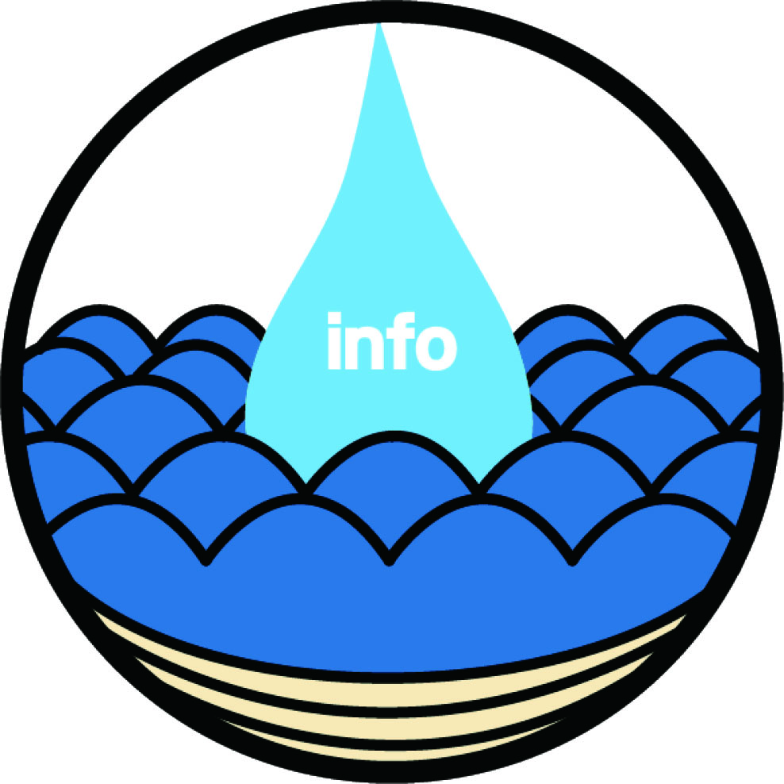

-
簡略化
世の中の情報が多すぎる。
情報をより早くインプットするなら
マンガ化が一番だ。
マンガとは見やすく伝える絵と少ない文字で
感情を伝えるコンテンツだ。
無駄なものを入れてはならない。 -
吸収力
IT化へと進む便利な時代とともに
人間の能力は低下しているのかもしれない
そんな事もないのかもしれない
しかし、情報のインプットの仕方は変えれる
他のどれよりもわかりやすく
楽しく頭に入れれます。 -
時短化
世の中で一番大事なのは時間です
効率よく勉強していくには極力無駄なことを
省く必要があります。 マンガ化することにより難しいことが 頭に入りやすくなり、他のことに時間を 回すことができます。 -
グローバル化
マンガとは少ないセリフが好ましいと言われています。 それは他の言語にすることが簡単ということでもあります。
日本の文化のマンガは世界に広がっています。
誰にでもわかるようにARTRACTIONは製作します。 -
匿名
影響力の持っているインフルエンサーの発言で変わっていく事があります。 しかし誰もが顔出して大きな声で物を言えるわけではないと思います。 マンガにするということはキャラが話すという事です。 アニメティなキャラが複雑な事を受け入れやすく表現します。
-
共有
もちろんマンガとして読んで楽しく
そして一つの話題として
友達と一緒に知識を増やしてみて下さい。
ABOUT US
時代による情報の重要さはさらにましてきています。
一つの情報で私の人生も広がっていきました。
しかし情報の収集に疎い人が多いことや
IT産業の促進による吸収できないほどの情報の選別の難しさなど
情報を選べる時代になりました。
マンガによるコミュカルな表現インプットされやすい情報の発信
オリジナリティーの高い広告媒体情報の伝え方を変えませんか?
情報をマンガにする利点
ARTRACTIONではまず、でヒアリングをして、そこからのを元にマンガを制作いたします。
少数精鋭だからこそ、柔軟な対応かつ、高いクオリティのを供給しております。
私たちは、お客様に納得のいく形で、複雑なをにし
より多くの人に分かりやすく伝えます。
そして、その内容は、
お客様のターゲットに的を絞った
直接伝わるストーリーと、キャラクターで行います。
複雑な情報を分かりやすく、簡単にマンガで伝えたい。
だけど.......
シナリオを描くのが苦手、マンガの事は全然分からなくて悩んでる方。
また４コママンガにしたい、モノクロやカラーを指定したい等々......
なんでもお気軽にご相談下さい！！